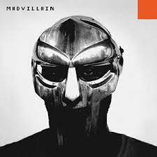

MF DOOM's best work, seconded
to Operation Doomsday, accompanied
by Madlib's beats. It's sonically
gritty and overall feels apathetic.
I don't understand Portuguese
but, almost every song on the
album is replayable and it's
jazz so it's automatically
good.
Big L is one wittiest
rappers of all time
despite only being in
the rap game for a short
time. This album is a
collection his greatest
song during that time.
The most perfectly crafted
album you could think of.
It's used by sound engineers
to test their sound systems,
that's how good it is.